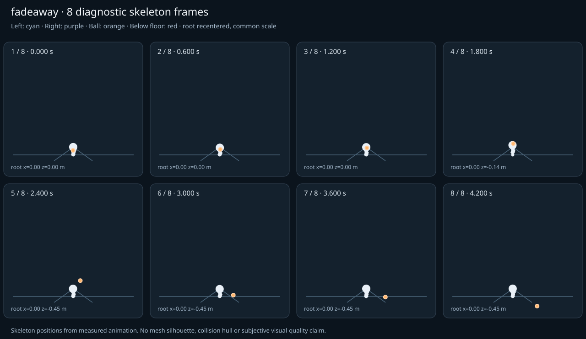

כל הקליפים · תצוגת התנועה · JSON מקורי
ציון 96.4 · כיסוי 100%
נתוני motion-qa-v1 המקוריים; עיצוב הדוח בלבד הותאם לחבילה. נקודות הסוליה נמדדות בתרחיש שחקן חיצוני מוצהר; Root בנכס נשאר קבוע.

| מדד | מצב | ערך | ציון | ראיות |
|---|---|---|---|---|
| החלקת רגליים | ירוק | 0.000028 | 99.94 | ראיות המדידה{
"coordinateSpace": "native GLB plus explicitly declared external actor position and heading, applied once",
"supportSource": "declared",
"windows": 4,
"samples": 774,
"maxDriftMeters": 0.000047,
"p95SpeedMetersPerSecond": 0.001777,
"worst": {
"bone": "RightFoot",
"t": 0.516667,
"start": 0,
"end": 1.4,
"driftMeters": 0.000047
}
} |
| חדירה לרצפה | ירוק | 0.000319 | 98.72 | ראיות המדידה{
"samples": 10100,
"floorY": 0,
"probeKind": "declared sole probes plus skeletal joint centers (no mesh surfaces)",
"maxDepthMeters": 0.000539,
"worst": {
"t": 2.483333,
"bone": "LeftFoot",
"depthMeters": 0.000539,
"y": -0.000539
}
} |
| קפיצות פוזה | ירוק | 0.854576 | 82.91 | ראיות המדידה{
"adjacentPairs": 504,
"observations": 8568,
"maxDegrees60Hz": 12.818646,
"maxMarkerStepHeight60Hz": 0.028948,
"maxRootStepHeight60Hz": 0.008319,
"worst": {
"ratio": 0.8545764056530594,
"t": 0.2,
"previousTime": 0.191667,
"bone": "LeftHand",
"markerStepHeight60Hz": 0.010618,
"degrees60Hz": 12.818646
}
} |
| חריגות אנטומיות | ירוק | 0 | 100 | ראיות המדידה{
"testedFrames": 505,
"affectedFrames": 0,
"checks": 8585,
"maxLimbFlexionDegrees": 101.619574,
"maxRelativeSegmentLengthChange": 0,
"hingeDirectionChecked": true,
"axialTwistChecked": false,
"violations": []
} |
| מגע בכדור | ירוק | 0 | 100 | ראיות המדידה{
"radiusMeters": 0.12,
"samples": 1,
"missed": [],
"contacts": [
{
"t": 1.8,
"bone": "RightHand",
"gapMeters": 0,
"signedGapMeters": 0,
"centerDistanceMeters": 0.12,
"contactPoint": [
-0.040214,
2.027438,
0.130919
],
"ballCenter": [
-0.040214,
2.147438,
0.130919
],
"declaredLocalPoint": true
}
],
"contactDetailsTruncated": false,
"coordinateSpace": "native GLB plus explicitly declared external actor position and heading, applied once"
} |
| כניסה ויציאה מול המתנה | ירוק | 0.016404 | 99.67 | ראיות המדידה{
"entry": {
"ratio": 0.0164044507100401,
"t": 0,
"idleTime": 0.216667,
"markers": 17,
"rmsPositionHeight": 0.000655,
"rmsRotationDegrees": 0.125934,
"rmsVelocityHeightPerSecond": 0.012303,
"velocityEvaluated": true
},
"exit": {
"ratio": 0.00811773708762149,
"t": 4.2,
"idleTime": 3.9,
"markers": 17,
"rmsPositionHeight": 0.000302,
"rmsRotationDegrees": 0.058125,
"rmsVelocityHeightPerSecond": 0.006088,
"velocityEvaluated": true
},
"worstEndpoint": "entry",
"alignment": "horizontal root translation; raw asset poses used when provided"
} |
| מהירות גוף מול צעדים | לא חל | — | — | ראיות המדידה{} |
| סימטריה | ירוק | 0 | 100 | ראיות המדידה{
"mode": "structural",
"modeSource": "declared",
"structuralMismatch": 0,
"segments": [
{
"segment": "Arm-ForeArm",
"mismatch": 0
},
{
"segment": "ForeArm-Hand",
"mismatch": 0
},
{
"segment": "UpLeg-Leg",
"mismatch": 0
},
{
"segment": "Leg-Foot",
"mismatch": 0
}
],
"motionRmsHeight": null,
"worstMotion": null,
"bilateralPoseRmsHeightUnscored": 0.037573,
"note": "One-sided authored actions are checked for structural symmetry only."
} |